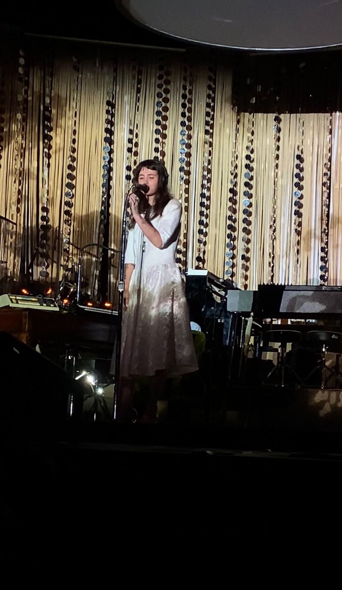
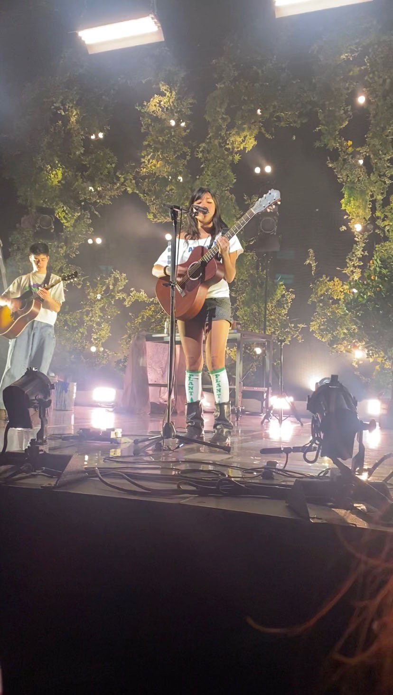

The Root of it All
Music is the root of everything. Queens like Clairo, Laufey, Alice Phoebe Lou, Phoebe Bridgers, Beabadoobee, and other feminists paved the way for many people to gain attention from having such a great aesthetic. Well I've had ENOUGH. Their music is too fire to be overlooked and used as a way to get the ladies. Mr. Eclectic by Laufey proves that even the artists know how much they are being used as BAIT. I'M SICK OF IT. Music is the best thing in the world enjoying it is even better.
 |
 |
 |
|---|---|---|
Alice Phoebe Lou |
Clairo |
Beabadoobee |